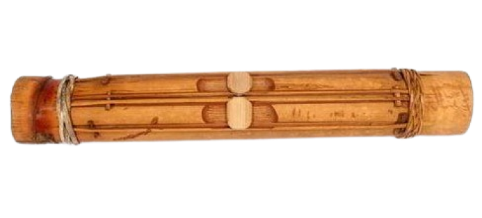

Sulawesi Tenggara

Ini adalah Dimba Nggowuna, Dimba Nggowuna dimainkan dengan cara dipetik dan dipukul. Alat musik ini terbuat dari bambu dan disebut sebagai gendang bambu. Tujuan alat musik ini dimainkan hanya untuk hiburan. Biasanya, yang memainkan alat musik ini adalah wanita disaat mereka menenun di rumah.